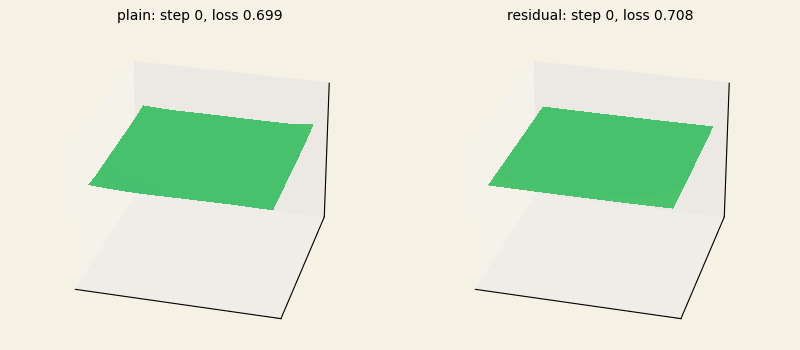
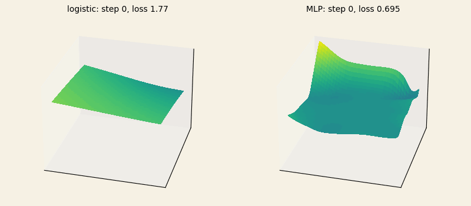
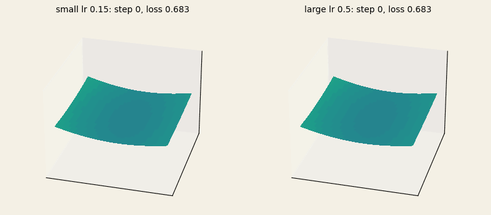
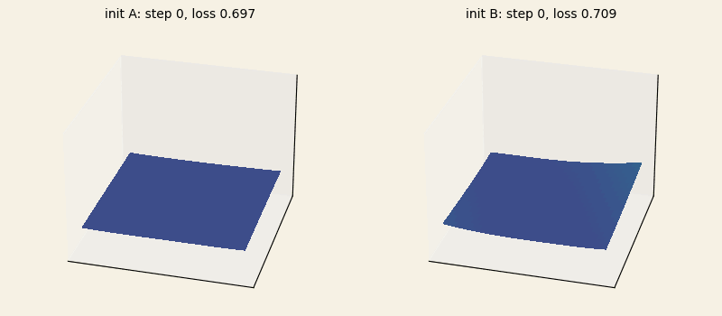
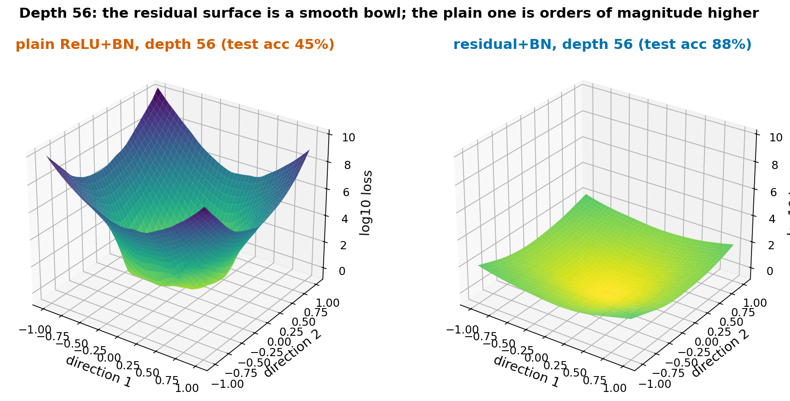
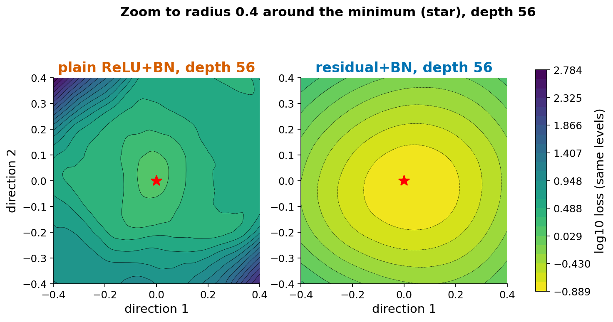
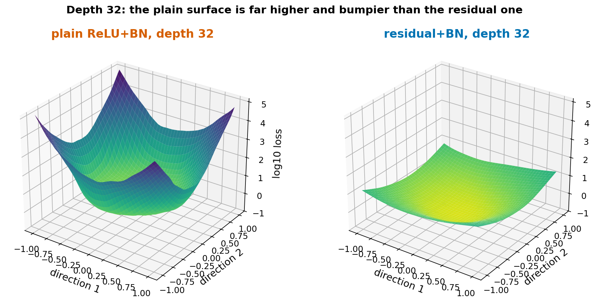
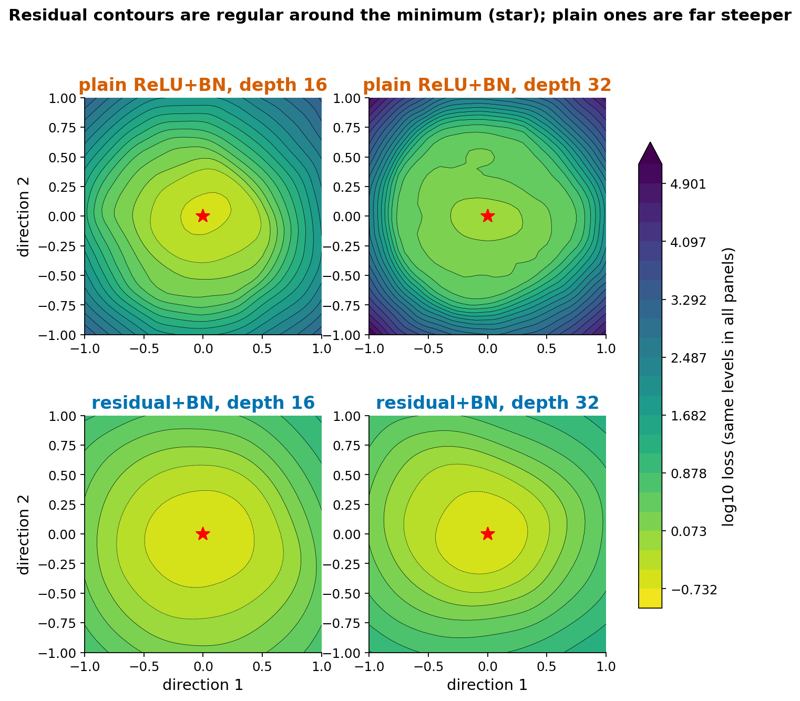
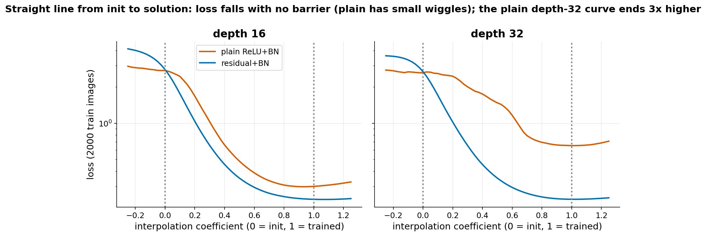

Loss landscape
Extends Going deep (Lab 1). Related to the 3D demo of the Optimizer race.
Open the interactive viewer: the default view is the movie above (Play, scrub, orbit). Two more views use FashionMNIST: press Play to replay training (depth 32 or 56) and watch the loss landscape around the network change as it trains (the default of these two views), or the real training path drawn on a fixed plane. Heights are the loss itself, cut flat above a cap stated in each caption.
The idea
Setting. The loss of a network is a function of millions of weights, so it cannot be drawn directly. The usual trick is to pick a trained weight vector w and two directions d1, d2 and plot L(w + a*d1 + b*d2) over a grid of (a, b). The result is a 2-D slice of the landscape, shown as a surface or as contour lines.
Filter normalization (Li et al. 2018). Random directions are not comparable between networks because the weights have different scales. Each row of a layer's weight matrix (one neuron's weights) in the direction is rescaled to the norm of the same row in the trained weights, and the direction is set to zero for biases and batch-norm parameters. Then a step of 1 means "change every neuron's weights by about their own size", and plots of different networks can be placed side by side.
Linear interpolation (Goodfellow, Vinyals, Saxe 2015). A second view plots the loss along the straight line from the initial weights to the trained weights. Their finding was that, for the networks they studied, the loss decreases steadily along this line, with no barrier between start and solution.
Why it is useful for a course. In Going deep, plain deep networks stop training while residual ones keep training. This page shows the same difference as a picture of the loss surface around the solution. It links to ch 8 (optimization difficulty, ill-conditioning) and ch 6 (architecture). The 3D demo races optimizers on toy 2-D surfaces; here the surface is a slice through a real network, with the caveat that it is only two directions out of many.
Established vs debated.
- Established (empirical): with filter normalization, networks with skip connections have much smoother, more convex-looking slices than the same networks without them, and the difference grows with depth (Li et al. 2018).
- Established (empirical): in the networks of Goodfellow et al., the straight line from initialization to solution shows no barriers.
- Debated: whether flat minima generalize better. Keskar et al. (2017) report that large-batch training reaches sharper minima with a larger generalization gap. Dinh et al. (2017) show that sharpness can be changed arbitrarily by rescaling weights in networks with ReLU units without changing the function, so sharpness alone cannot explain generalization. Filter normalization is Li et al.'s answer to this scale problem for visual comparisons, but it does not settle the question. We tested nothing about generalization here.
- Limit of the method: a 2-D slice can look smooth while other directions are not, and the picture depends on the scale of the directions and on the loss (we plot the loss on 2000 training images).
References:
- Li, Xu, Taylor, Studer, Goldstein (2018), Visualizing the Loss Landscape of Neural Nets.
- Goodfellow, Vinyals, Saxe (2015), Qualitatively characterizing neural network optimization problems.
- Keskar, Mudigere, Nocedal, Smelyanskiy, Tang (2017), On Large-Batch Training for Deep Learning: Generalization Gap and Sharp Minima.
- Dinh, Pascanu, Bengio, Bengio (2017), Sharp Minima Can Generalize For Deep Nets.
Loss landscape movie: follow the network
The loss function on a fixed dataset never changes. What moves in this movie is the window: at every training step we draw the loss on a slice around the current weights, along the same two random directions, so the picture follows the network. The same idea is behind the moving surfaces on losslandscape.com; Li et al. (2018) themselves show static slices and paths on a fixed plane.
Toy setting: the two-spirals data of the Going deep playground (400 points), full-batch gradient descent (learning rate 0.05, 6,000 steps), a plain and a residual network with 10 layers of width 16 and ReLU. Slice: 81 x 81 points over [-1, 1]^2, filter-normalized to the weights of the current step, height = log10 of the loss with one fixed range for all frames (95 frames, dense early).




We also tried a small-batch vs large-batch “flat vs sharp” pair. It did not show the textbook effect on this toy problem: the small-batch run ended sharper but also at a lower loss, so the comparison is not fair and we dropped it.
What students could do
This could be a 10-15 minute demo or a replacement for the main experiment, in a guided PyTorch notebook.
- Load FashionMNIST and fix a subset of 2000 training images. Reuse the Going deep models (width 128; plain ReLU+BN and residual) and train for a few epochs.
- Draw two random directions with the same shapes as the parameters. For each weight matrix, rescale each row to the norm of the matching row of the trained weights. Set bias and batch-norm directions to zero.
- Evaluate the loss on a 41x41 grid over [-1, 1] x [-1, 1] with the network in eval mode. About 1700 forward passes on 2000 images take 6 to 12 seconds per network on a CPU.
- Plot the surface (use log loss) and the contours. Also plot the loss along the line from the initial to the trained weights.
- Class experiment. Each student takes one variant (depth 8, 16, 32 or 56, with or without skip connections) and a seed, and computes the grid. The class assembles a gallery with one panel per variant on the same color scale.
Questions for the discussion:
- Which of the two surfaces would gradient descent find easier? Why does the plain depth-56 network end at loss 1.32 while the residual one ends at 0.13?
- The plain network is orders of magnitude higher at the edge of the grid. What does that say about how sensitive its output is to the weights?
- Is a smooth slice evidence that the whole landscape is smooth?
- If flat minima are not clearly better for generalization (Dinh et al.), what is a landscape plot good for?
What our prototype found
Setup: FashionMNIST, 60000 training images, MLP of width 128, SGD with momentum 0.9 and batch 128, seed 0, one network per variant. Landscape: two random filter-normalized directions, 41x41 grid over [-1, 1]^2, loss on a fixed set of 2000 training images, batch norm in eval mode. The depth-16 and depth-32 networks were trained 5 epochs with lr 0.03. The depth-56 networks of the static figures and table were trained 15 epochs with lr 0.01 (with lr 0.03 and 5 epochs the plain depth-56 network reached only 28% test accuracy). For depth 56 we also computed a finer 61x61 grid over [-0.4, 0.4]^2 with the same directions. Compute: about 4 minutes on a CPU for the depth-56 pair, 71 seconds for the other four. The interactive viewer uses a longer depth-56 re-run: same lr 0.01, momentum, batch size and seed, but 240 epochs (112,560 steps) for both networks; plain ends at training loss 0.686 and 55.6% test accuracy (45.1% after 15 epochs, 47.5% after 60), residual at 0.0017 and 89.1% (88.3% after 15 epochs), and the plain loss was still falling (0.845 at 60 epochs, 0.818 at 120, 0.750 at 180). The static figures and the table below were not regenerated and come from the 15-epoch run.


Depth trend (16 and 32)



| network | test accuracy | loss at minimum | median loss on grid | max loss on grid | roughness (log10 loss) |
|---|---|---|---|---|---|
| plain 16 | 86.0% | 0.315 | 10.0 | 2257 | 0.011 |
| residual 16 | 87.7% | 0.233 | 1.05 | 15.6 | 0.004 |
| plain 32 | 73.7% | 0.675 | 13.7 | 147783 | 0.022 |
| residual 32 | 87.6% | 0.239 | 1.85 | 26.4 | 0.004 |
| plain 56 (15 epochs) | 45.1% | 1.318 | 46153 | 2.0e10 | 0.048 |
| residual 56 (15 epochs) | 88.3% | 0.133 | 5.9 | 136 | 0.006 |
Roughness is the mean absolute second difference of log10 loss along direction 1 on the [-1, 1] grid. Limits: one seed and one pair of directions per network, and short training (the depth-56 networks were trained with a different lr and number of epochs than the others, so compare within a depth). The plain depth-32 and depth-56 networks are worse solutions (74% and 45% test accuracy; 55.6% in the 240-epoch depth-56 re-run), so part of the difference in the plots comes from where training ended and not only from the architecture. The surfaces look steep at large radius in part because a step of 1 is large (the weights change by their own size).